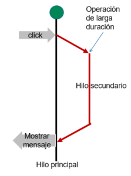

¿Cómo ocurre la concurrencia dentro de Android 10?
Dentro del sistema operativo Android 10, la concurrencia se logra a través de varias técnicas
y herramientas que permiten la ejecución simultánea de múltiples tareas, lo que es fundamental
para mantener una experiencia de usuario fluida y receptiva en dispositivos móviles.
En Android, existen varios tipos de concurrencia que se utilizan para ejecutar tareas de manera
simultánea o en segundo plano.
Hilos (Threads): Android 10, como todas las versiones anteriores de Android, utiliza hilos
para permitir la ejecución simultánea de tareas. Los hilos son unidades de ejecución
que permiten que varias partes del código se ejecuten de manera independiente. estos son la forma
más básica de concurrencia en Android y cualquier otro sistema operativo.

Para evitar condiciones de carrera y problemas de concurrencia, Android utiliza
mecanismos como cerrojos (locks), semáforos y sincronización de hilos.

Android 10 se basa en la gestión de hilos, para lograr su concurrencia utiliza sistemas
para administrar y distribuir
tareas en múltiples hilos, cual su función es determinar qué hilo se ejecuta en un momento dado, en donde el sistema operativo decide cuánto tiempo se le asigna a cada hilo antes de cambiar a otro.
Esto se hace para mantener una experiencia de usuario fluida y rápida.. Por ejemplo, el hilo principal se encarga de la interfaz
de usuario, mientras que otros hilos pueden manejar operaciones en segundo plano.
Tipos de concurrencia
Android 10 y sus versiones anteriors hereda muchos de los principios
y técnicas de concurrencia que son comunes en sistemas operativos modernos, A continuación,
veremos algunos tipos de concurrencia que son aplicables al contexto Android.
1.- Concurrencia de hilos
Android 10, como todas las versiones de Android, reiterando, permite la creación y gestión de hilos
para realizar tareas concurrentes. Sin embargo, se recomienda utilizar APIs modernas como java.util.concurrent
y android.os.Handler para facilitar la administración de hilos.
2.- Concurrencia a nivel de procesos
En Android, cada aplicación se ejecuta en su propio proceso. No necesitas gestionar esto directamente,
ya que Android se encarga de ello.
Sin embargo, puedes interactuar con otros procesos a través de IPC.
3.- Concurrencia a nivel de tarea
Por ejemplo, puedes utilizar AsyncTask para realizar una tarea en segundo plano y
actualizar la interfaz de usuario.
4.- Concurrencia a nivel de instrucción
Esto es manejado a nivel de hardware y no requiere intervención directa del desarrollador
de aplicaciones.
5.- Concurrencia a nivel de datos
Puedes utilizar Executor o ThreadPoolExecutor para ejecutar tareas en paralelo, por ejemplo,
para procesar una lista de datos.
6.- Concurrencia a nivel de eventos
Esto es una parte fundamental de Android. Por ejemplo, para responder a un clic de botón,
puedes usar un OnClickListener.
¿Cómo se crean los hilos?
Los hilos pueden crearse directamente utilizando la clase Thread, pero
también se pueden utilizar
clases como AsyncTask o HandlerThread para facilitar su gestión.
•AsyncTask
Ha sido desaconsejada en versiones más recientes de Android, y se recomienda el uso de bibliotecas y patrones más modernos como ViewModel junto con Coroutines o RxJava. Sin embargo te permite realizar trabajos asíncronos en la interfaz de usuario. Realiza las operaciones de bloqueo en un subproceso de trabajo y, luego, publica los resultados en el subproceso de IU sin que debas administrar los subprocesos o controladores
•Executor framewor
Android 10 utiliza con frecuncia Executor framework, que proporciona una forma más eficiente de administrar la ejecución de hilos y tareas. Puedes usar Executors para crear pools de hilos y ejecutar tareas de manera concurrente.Basicamente es bjeto que ejecuta las tareas enviadas. Éste proporciona una forma de desacoplar el envío de tareas de la interfaz Mecánica de cómo se ejecutará cada tarea, incluidos los detalles del hilo uso
•Coroutines (Kotlin)
En Android 10, las coroutines de Kotlin han ganado popularidad como una
forma más sencilla y estructurada de manejar la concurrencia.
En Android, las corrutinas ayudan a administrar tareas de larga duración que,
de lo contrario, podrían bloquear el subproceso principal y hacer que tu app dejara de responder
Las funciones más importantes son las siguientes:
• Ligereza
• Menos fugas de memoria
• Integración con Jetpack
•Handler y Looper
Un Handler es un objeto que permite programar y ejecutar código en un hilo específico.
Se utiliza para comunicarse entre hilos y para programar tareas para su ejecución en el futuro.
El Looper permite que un hilo procese mensajes en una cola. Los mensajes son objetos que contienen instrucciones que el hilo debe ejecutar.
Estas mismas siguen siendo componentes fundamentales en Android 10 para la administración de tareas asíncronas y la comunicación entre hilos. Sin embargo, se recomienda
explorar y utilizar técnicas de concurrencia más modernas
•RxJava
Se utiliza para trabajar con flujos de datos y eventos asincrónicos. Es especialmente popular en el desarrollo de aplicaciones Android debido a su capacidad para gestionar la concurrencia y la complejidad de las operaciones asíncronas de manera más estructurada y legible.
Ventajas y desventajas de la ejecución de concurrencia
Pros
Mayor rendimiento y utilización de recursos.
Mejora de la capacidad de respuesta en aplicaciones interactivas.
Capacidad para realizar tareas largas en segundo plano sin
bloquear
la interfaz de usuario.
Contras
Mayor complejidad en el diseño y la depuración.
Posibles problemas de sincronización y condiciones de carrera.
Consumo adicional de memoria y recursos del sistema.
Servicios, proceso y manejos de recursos
Las actividades dentro del sistema operativo Android tienen su propio ciclo de vida.
Pueden estar en primer plano (son enfocadas y visibles para el usuario), en segundo plano
(solo están en ejecución, pero no son visibles por el usuario) o en estado inactivo (fuera
de la vista pero mantienen su estado). Esto permite a múltiples actividades coexistir y
responder según sus estados.
Aquí es donde servicios en Android juegan un rol importante, estos son componentes que pueden
ejecutarse en segundo plano, incluso cuando la aplicación no está en primer plano. Esto permite que
ciertas tareas continúen ejecutándose, como por ejemplo la reproducción de música o la actualización
de notificaciones.
Para poder ser capaces de realizar esto Android gestiona los recursos del sistema
(como CPU, memoria y red) utilizando políticas de prioridad y restricciones. Por ejemplo, las tareas
en primer plano generalmente tienen prioridad sobre las tareas en segundo plano para garantizar una
respuesta rápida del usuario y evitar problemas de gestión.